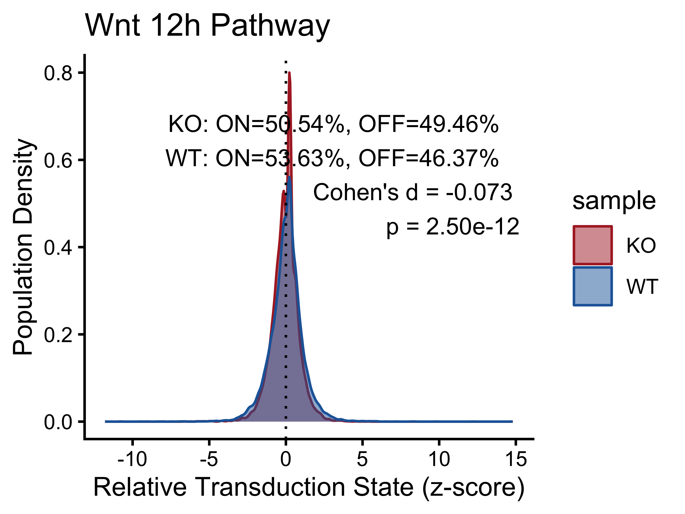
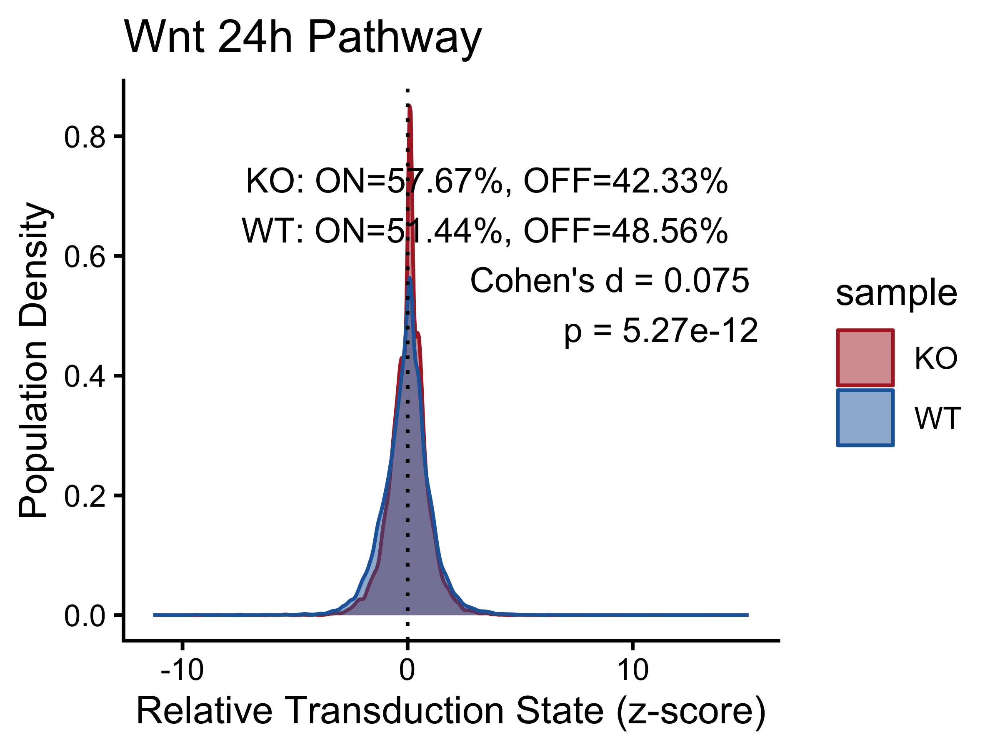
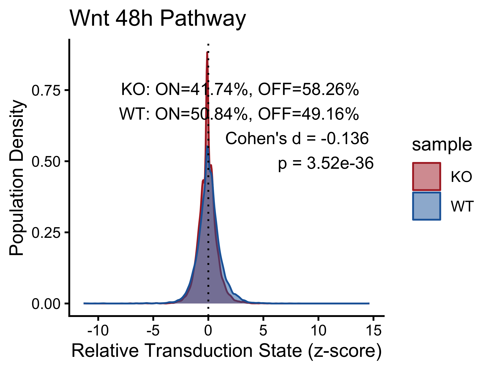
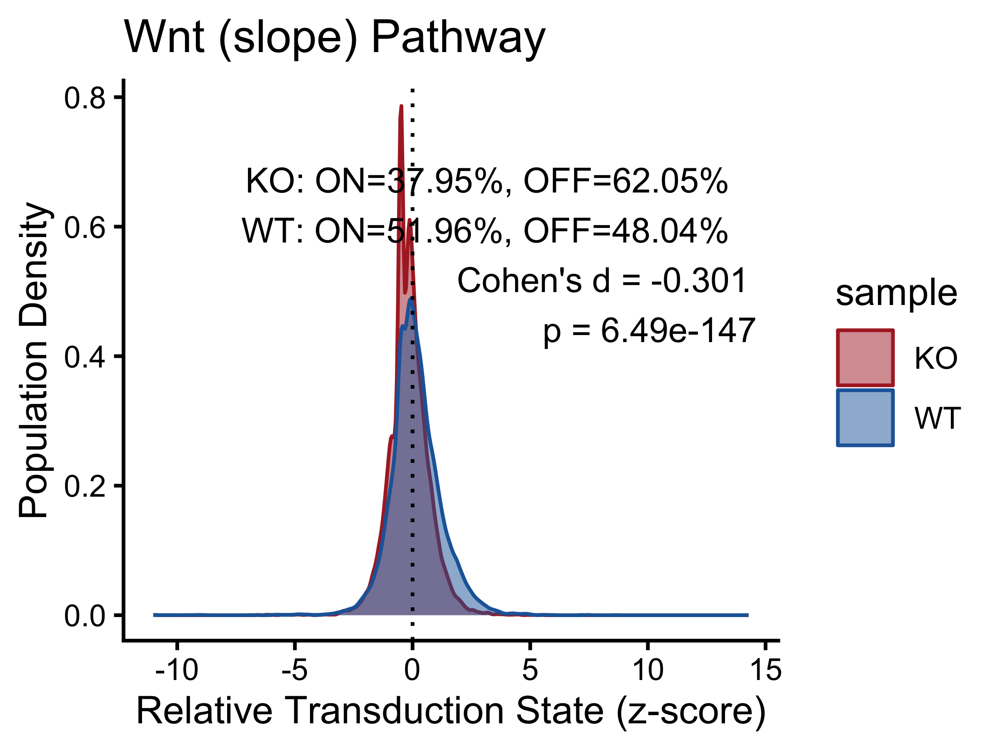
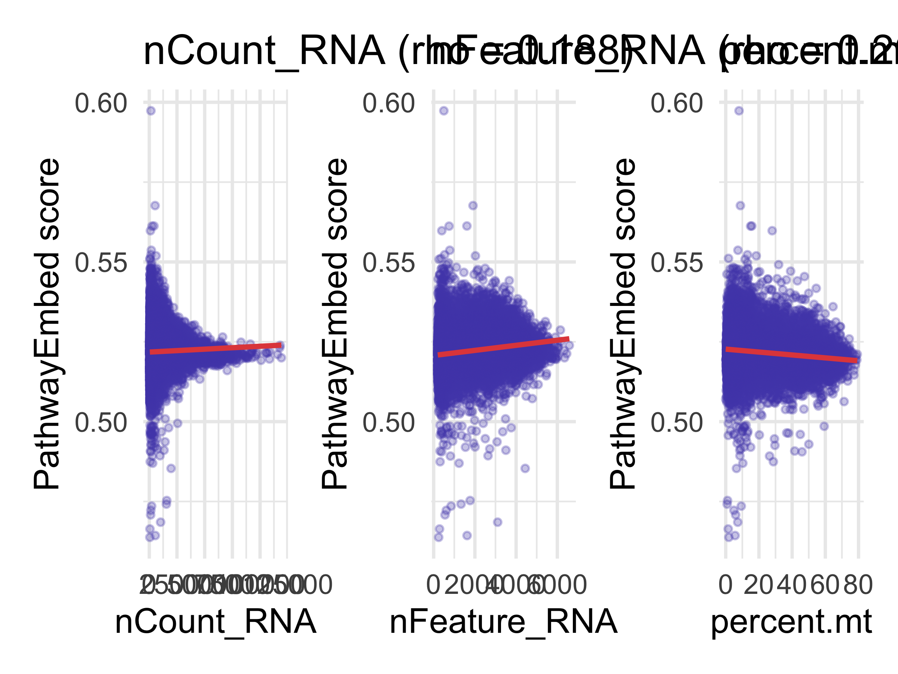
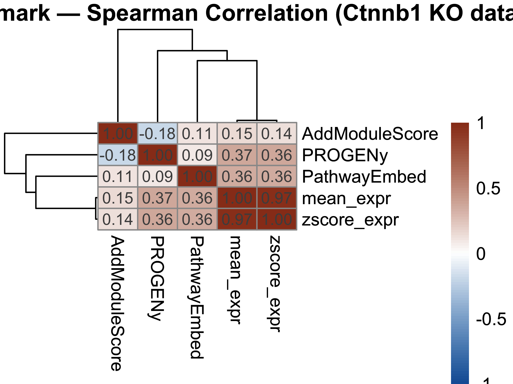
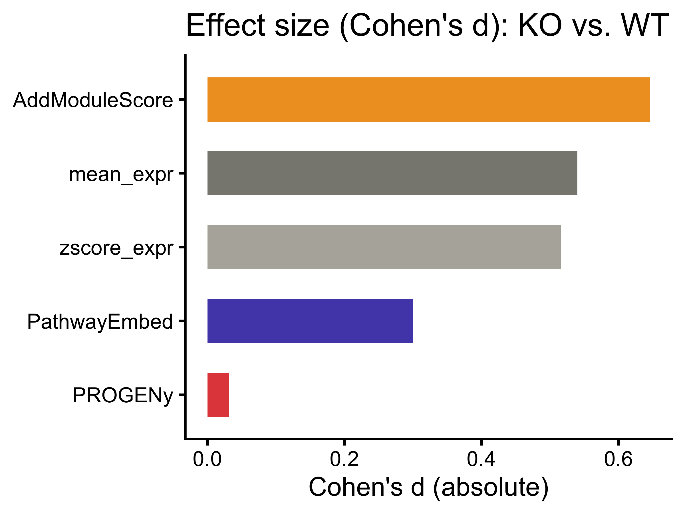
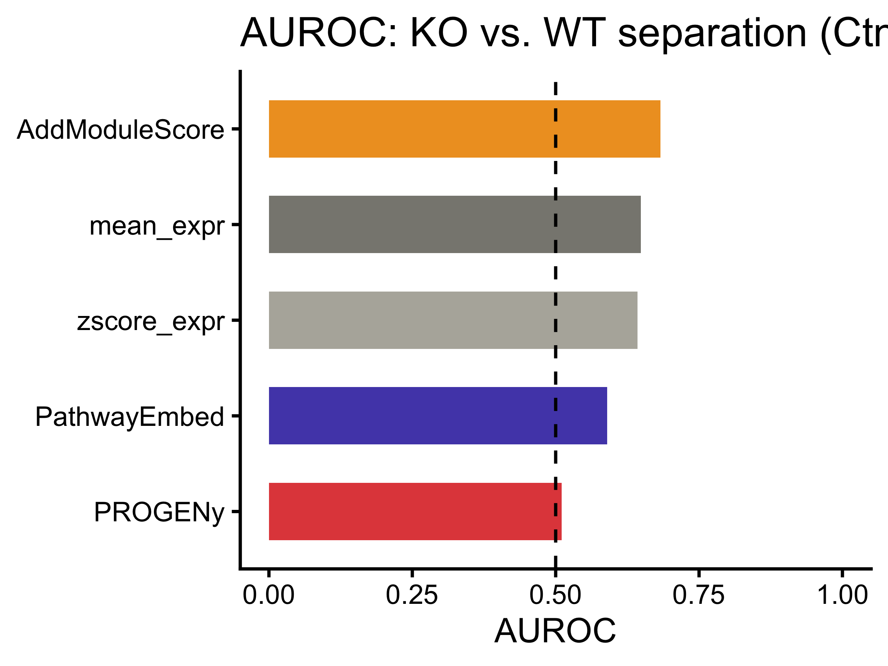
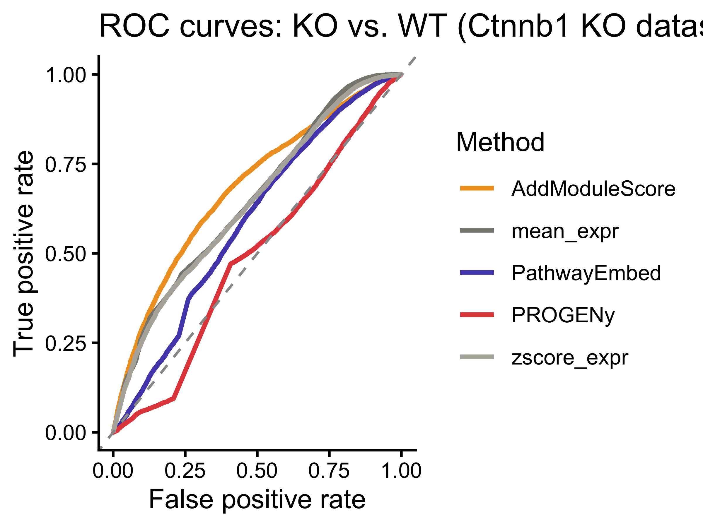

Beta-Catenin Knockout Analysis with PathwayEmbed
beta_catenin_ko_updated.RmdOverview
This vignette demonstrates the application of PathwayEmbed in a beta-catenin perturbed system where the Ctnnb1 upstream enhancer is depleted in intestinal epithelia. Because the KO genotype is known by design, this dataset provides a clean biological ground truth for a direct AUROC benchmark against PROGENy and AddModuleScore.
Reference: Hua et al., eLife 13: RP98238 (2024). https://doi.org/10.7554/eLife.98238
Load Packages
library(PathwayEmbed)
library(Seurat)
#> Warning: package 'Seurat' was built under R version 4.4.3
#> Loading required package: SeuratObject
#> Warning: package 'SeuratObject' was built under R version 4.4.3
#> Loading required package: sp
#> Warning: package 'sp' was built under R version 4.4.3
#>
#> Attaching package: 'SeuratObject'
#> The following objects are masked from 'package:base':
#>
#> intersect, t
library(ggplot2)
#> Warning: package 'ggplot2' was built under R version 4.4.3
library(patchwork)
library(pheatmap)
library(progeny)
library(pROC)
#> Registered S3 method overwritten by 'pROC':
#> method from
#> plot.roc spatstat.explore
#> Type 'citation("pROC")' for a citation.
#>
#> Attaching package: 'pROC'
#> The following objects are masked from 'package:stats':
#>
#> cov, smooth, varHelper: Annotation Label Builder
make_label <- function(stats, group1, group2) {
d <- round(stats$cohens_d[1], 3)
p <- formatC(stats$p_value[1], format = "e", digits = 2)
on1 <- stats$percentage_on[stats$group == group1]
off1 <- stats$percentage_off[stats$group == group1]
on2 <- stats$percentage_on[stats$group == group2]
off2 <- stats$percentage_off[stats$group == group2]
paste0(
group1, ": ON=", on1, "%, OFF=", off1, "%\n",
group2, ": ON=", on2, "%, OFF=", off2, "%\n",
"Cohen's d = ", d, "\n",
"p = ", p
)
}Download Data
url_ko <- "https://ftp.ncbi.nlm.nih.gov/geo/series/GSE233nnn/GSE233978/suppl/GSE233978_KO_filtered_feature_bc_matrix.h5"
url_wt <- "https://ftp.ncbi.nlm.nih.gov/geo/series/GSE233nnn/GSE233978/suppl/GSE233978_WT_filtered_feature_bc_matrix.h5"
download.file(url_ko, destfile = "GSE233978_KO_filtered_feature_bc_matrix.h5", mode = "wb")
download.file(url_wt, destfile = "GSE233978_WT_filtered_feature_bc_matrix.h5", mode = "wb")Data Preparation and Preprocessing
ko_data <- Read10X_h5("GSE233978_KO_filtered_feature_bc_matrix.h5")
wt_data <- Read10X_h5("GSE233978_WT_filtered_feature_bc_matrix.h5")
ko <- CreateSeuratObject(counts = ko_data, project = "KO",
min.cells = 3, min.features = 200)
wt <- CreateSeuratObject(counts = wt_data, project = "WT",
min.cells = 3, min.features = 200)
ko$sample <- "KO"
wt$sample <- "WT"
merged <- merge(ko, wt)
#> Warning: Some cell names are duplicated across objects provided. Renaming to
#> enforce unique cell names.
merged[["RNA"]] <- JoinLayers(merged[["RNA"]])
merged <- NormalizeData(merged, normalization.method = "LogNormalize",
scale.factor = 10000)
#> Normalizing layer: counts
merged <- FindVariableFeatures(merged, selection.method = "vst",
nfeatures = 2000)
#> Finding variable features for layer counts
merged <- ScaleData(merged, features = VariableFeatures(merged))
#> Centering and scaling data matrixWnt Pathway Scoring
Wnt_12h <- LoadPathway("WNT3A_12H_ACTIVATION", "mouse")
Wnt_24h <- LoadPathway("WNT3A_24H_ACTIVATION", "mouse")
Wnt_48h <- LoadPathway("WNT3A_48H_ACTIVATION", "mouse")
Wnt_slope <- LoadPathway("WNT3A_SLOPE_ACTIVATION", "mouse")
matrix_12h <- DataPreProcess(merged, Wnt_12h, Seurat.object = TRUE)
#> Warning in asMethod(object): sparse->dense coercion: allocating vector of size
#> 3.3 GiB
matrix_24h <- DataPreProcess(merged, Wnt_24h, Seurat.object = TRUE)
#> Warning in asMethod(object): sparse->dense coercion: allocating vector of size
#> 3.3 GiB
matrix_48h <- DataPreProcess(merged, Wnt_48h, Seurat.object = TRUE)
#> Warning in asMethod(object): sparse->dense coercion: allocating vector of size
#> 3.3 GiB
matrix_slope <- DataPreProcess(merged, Wnt_slope, Seurat.object = TRUE)
#> Warning in asMethod(object): sparse->dense coercion: allocating vector of size
#> 3.3 GiB
pathwaystat_12h <- PathwayMaxMin(matrix_12h, Wnt_12h)
pathwaystat_24h <- PathwayMaxMin(matrix_24h, Wnt_24h)
pathwaystat_48h <- PathwayMaxMin(matrix_48h, Wnt_48h)
pathwaystat_slope <- PathwayMaxMin(matrix_slope, Wnt_slope)
score_12h <- ComputeCellData(matrix_12h, pathwaystat_12h)
#> Computing distance...
score_24h <- ComputeCellData(matrix_24h, pathwaystat_24h)
#> Computing distance...
score_48h <- ComputeCellData(matrix_48h, pathwaystat_48h)
#> Computing distance...
score_slope <- ComputeCellData(matrix_slope, pathwaystat_slope)
#> Computing distance...Visualization
plot_data_12h <- PreparePlotData(merged, score_12h, "sample", Seurat.object = TRUE)
plot_data_24h <- PreparePlotData(merged, score_24h, "sample", Seurat.object = TRUE)
plot_data_48h <- PreparePlotData(merged, score_48h, "sample", Seurat.object = TRUE)
plot_data_slope <- PreparePlotData(merged, score_slope, "sample", Seurat.object = TRUE)
pct_12h <- CalculatePercentage(plot_data_12h, "sample")
pct_24h <- CalculatePercentage(plot_data_24h, "sample")
pct_48h <- CalculatePercentage(plot_data_48h, "sample")
pct_slope <- CalculatePercentage(plot_data_slope, "sample")
pct_12h; pct_24h; pct_48h; pct_slope
#> # A tibble: 2 × 5
#> group percentage_on percentage_off cohens_d p_value
#> <chr> <dbl> <dbl> <dbl> <dbl>
#> 1 KO 50.5 49.5 -0.0728 2.50e-12
#> 2 WT 53.6 46.4 -0.0728 2.50e-12
#> # A tibble: 2 × 5
#> group percentage_on percentage_off cohens_d p_value
#> <chr> <dbl> <dbl> <dbl> <dbl>
#> 1 KO 57.7 42.3 0.0748 5.27e-12
#> 2 WT 51.4 48.6 0.0748 5.27e-12
#> # A tibble: 2 × 5
#> group percentage_on percentage_off cohens_d p_value
#> <chr> <dbl> <dbl> <dbl> <dbl>
#> 1 KO 41.7 58.3 -0.136 3.52e-36
#> 2 WT 50.8 49.2 -0.136 3.52e-36
#> # A tibble: 2 × 5
#> group percentage_on percentage_off cohens_d p_value
#> <chr> <dbl> <dbl> <dbl> <dbl>
#> 1 KO 38.0 62.0 -0.301 6.49e-147
#> 2 WT 52.0 48.0 -0.301 6.49e-147
p_12h <- PlotPathway(plot_data_12h, "Wnt 12h", "sample", c("#ae282c", "#2066a8")) +
annotate("text", x = Inf, y = Inf, hjust = 1.1, vjust = 1.5,
label = make_label(pct_12h, "KO", "WT"), size = 3.5, color = "black")
#> Warning: Using `size` aesthetic for lines was deprecated in ggplot2 3.4.0.
#> ℹ Please use `linewidth` instead.
#> ℹ The deprecated feature was likely used in the PathwayEmbed package.
#> Please report the issue to the authors.
#> This warning is displayed once per session.
#> Call `lifecycle::last_lifecycle_warnings()` to see where this warning was
#> generated.
p_24h <- PlotPathway(plot_data_24h, "Wnt 24h", "sample", c("#ae282c", "#2066a8")) +
annotate("text", x = Inf, y = Inf, hjust = 1.1, vjust = 1.5,
label = make_label(pct_24h, "KO", "WT"), size = 3.5, color = "black")
p_48h <- PlotPathway(plot_data_48h, "Wnt 48h", "sample", c("#ae282c", "#2066a8")) +
annotate("text", x = Inf, y = Inf, hjust = 1.1, vjust = 1.5,
label = make_label(pct_48h, "KO", "WT"), size = 3.5, color = "black")
p_slope <- PlotPathway(plot_data_slope, "Wnt (slope)", "sample", c("#ae282c", "#2066a8")) +
annotate("text", x = Inf, y = Inf, hjust = 1.1, vjust = 1.5,
label = make_label(pct_slope, "KO", "WT"), size = 3.5, color = "black")
p_12h; p_24h; p_48h; p_slope



Technical Confounders
merged[["percent.mt"]] <- PercentageFeatureSet(merged, pattern = "^mt-")
seurat_meta <- merged@meta.data
make_scatter <- function(df, x_col, x_label) {
r <- cor(df$embed_score, df[[x_col]], method = "spearman", use = "complete.obs")
ggplot(df, aes(x = .data[[x_col]], y = embed_score)) +
geom_point(alpha = 0.3, size = 0.8, color = "#534AB7") +
geom_smooth(method = "lm", color = "#E24B4A", linewidth = 0.8, se = TRUE) +
labs(title = sprintf("%s (rho = %.3f)", x_label, r),
x = x_label, y = "PathwayEmbed score") +
theme_minimal()
}
confounder_df <- data.frame(
cell = names(score_slope),
embed_score = as.numeric(score_slope),
nCount_RNA = seurat_meta[names(score_slope), "nCount_RNA"],
nFeature_RNA = seurat_meta[names(score_slope), "nFeature_RNA"],
percent_mt = seurat_meta[names(score_slope), "percent.mt"]
)
for (cov in c("nCount_RNA", "nFeature_RNA", "percent_mt")) {
r <- cor(confounder_df$embed_score, confounder_df[[cov]],
method = "spearman", use = "complete.obs")
cat(sprintf("Spearman vs %-15s : %.3f\n", cov, r))
}
#> Spearman vs nCount_RNA : 0.188
#> Spearman vs nFeature_RNA : 0.262
#> Spearman vs percent_mt : -0.119
(make_scatter(confounder_df, "nCount_RNA", "nCount_RNA") +
make_scatter(confounder_df, "nFeature_RNA", "nFeature_RNA") +
make_scatter(confounder_df, "percent_mt", "percent.mt"))
#> `geom_smooth()` using formula = 'y ~ x'
#> `geom_smooth()` using formula = 'y ~ x'
#> `geom_smooth()` using formula = 'y ~ x'
Benchmark Against PROGENy and AddModuleScore
normalized_mat <- GetAssayData(merged, assay = "RNA", layer = "data")
normalized_mat_dense <- as.matrix(normalized_mat)
#> Warning in asMethod(object): sparse->dense coercion: allocating vector of size
#> 3.3 GiB
common_genes <- intersect(rownames(normalized_mat_dense), Wnt_slope$Gene_Symbol)
gene_matrix <- normalized_mat_dense[common_genes, ]
mean_expr <- colMeans(gene_matrix, na.rm = TRUE)
zscore_mean_per_cell <- colMeans(t(scale(t(gene_matrix))), na.rm = TRUE)
progeny_scores <- progeny(
normalized_mat_dense,
scale = TRUE,
organism = "Mouse",
top = 100,
perm = 1
)
progeny_wnt <- setNames(as.numeric(progeny_scores[, "WNT"]),
rownames(progeny_scores))
wnt_features <- rownames(matrix_slope)
merged <- AddModuleScore(
object = merged,
features = list(wnt_features),
name = "WNT_ModuleScore",
ctrl = 5,
nbin = 10
)
module_score <- setNames(
merged@meta.data$WNT_ModuleScore1,
rownames(merged@meta.data)
)
cells <- names(score_slope)
benchmark_df <- data.frame(
PathwayEmbed = as.numeric(score_slope),
PROGENy = as.numeric(progeny_wnt[cells]),
AddModuleScore = as.numeric(module_score[cells]),
mean_expr = as.numeric(mean_expr[cells]),
zscore_expr = as.numeric(zscore_mean_per_cell[cells]),
row.names = cells
)
benchmark_cor <- cor(benchmark_df, method = "spearman",
use = "pairwise.complete.obs")
print(round(benchmark_cor, 3))
#> PathwayEmbed PROGENy AddModuleScore mean_expr zscore_expr
#> PathwayEmbed 1.000 0.095 0.106 0.359 0.356
#> PROGENy 0.095 1.000 -0.180 0.367 0.362
#> AddModuleScore 0.106 -0.180 1.000 0.146 0.139
#> mean_expr 0.359 0.367 0.146 1.000 0.972
#> zscore_expr 0.356 0.362 0.139 0.972 1.000
p_cor <- pheatmap(
benchmark_cor,
color = colorRampPalette(c("#185FA5", "white", "#993C1D"))(100),
breaks = seq(-1, 1, length.out = 101),
display_numbers = TRUE, number_format = "%.2f",
fontsize_number = 9,
main = "Method Benchmark — Spearman Correlation (Ctnnb1 KO dataset)"
)
p_cor
ko_label <- ifelse(merged@meta.data[cells, "sample"] == "KO", 1L, 0L)
compute_auroc <- function(scores, labels) {
r <- roc(labels, scores, quiet = TRUE)
auc_val <- as.numeric(auc(r))
if (auc_val < 0.5) auc_val <- 1 - auc_val
auc_val
}
auroc_results <- data.frame(
Method = colnames(benchmark_df),
AUROC = sapply(benchmark_df, compute_auroc, labels = ko_label)
)
auroc_results <- auroc_results[order(-auroc_results$AUROC), ]
print(auroc_results)
#> Method AUROC
#> AddModuleScore AddModuleScore 0.6827026
#> mean_expr mean_expr 0.6482098
#> zscore_expr zscore_expr 0.6425566
#> PathwayEmbed PathwayEmbed 0.5897700
#> PROGENy PROGENy 0.5106677
compute_cohens_d_method <- function(scores_vec, seurat_obj, group_col) {
pd <- PreparePlotData(seurat_obj, scores_vec, group_col, Seurat.object = TRUE)
pct <- CalculatePercentage(pd, group_var = group_col)
abs(pct$cohens_d[1])
}
cohens_d_results <- data.frame(
Method = colnames(benchmark_df),
Cohens_d = sapply(
colnames(benchmark_df),
function(m) {
sv <- setNames(benchmark_df[[m]], rownames(benchmark_df))
compute_cohens_d_method(sv, merged, "sample")
}
)
)
cohens_d_results <- cohens_d_results[order(-cohens_d_results$Cohens_d), ]
print(cohens_d_results)
#> Method Cohens_d
#> AddModuleScore AddModuleScore 0.64575350
#> mean_expr mean_expr 0.54020251
#> zscore_expr zscore_expr 0.51565732
#> PathwayEmbed PathwayEmbed 0.30056596
#> PROGENy PROGENy 0.03129493
method_colors <- c(
"PathwayEmbed" = "#534AB7",
"PROGENy" = "#E24B4A",
"AddModuleScore" = "#EF9F27",
"mean_expr" = "#888780",
"zscore_expr" = "#B4B2A9"
)
p_cd <- ggplot(cohens_d_results,
aes(x = reorder(Method, Cohens_d), y = Cohens_d, fill = Method)) +
geom_bar(stat = "identity", width = 0.6) +
coord_flip() +
scale_fill_manual(values = method_colors) +
labs(title = "Effect size (Cohen's d): KO vs. WT",
x = NULL, y = "Cohen's d (absolute)") +
theme_classic() +
theme(legend.position = "none")
p_cd
p_auroc <- ggplot(auroc_results,
aes(x = reorder(Method, AUROC), y = AUROC, fill = Method)) +
geom_bar(stat = "identity", width = 0.6) +
geom_hline(yintercept = 0.5, linetype = "dashed", color = "black") +
coord_flip() +
scale_fill_manual(values = method_colors) +
labs(title = "AUROC: KO vs. WT separation (Ctnnb1 KO dataset)",
x = NULL, y = "AUROC") +
ylim(0, 1) +
theme_classic() +
theme(legend.position = "none")
p_auroc
roc_list <- lapply(colnames(benchmark_df), function(m) {
roc(ko_label, benchmark_df[[m]], quiet = TRUE)
})
names(roc_list) <- colnames(benchmark_df)
roc_df <- do.call(rbind, lapply(names(roc_list), function(m) {
r <- roc_list[[m]]
data.frame(Method = m, FPR = 1 - r$specificities, TPR = r$sensitivities)
}))
p_roc <- ggplot(roc_df, aes(x = FPR, y = TPR, color = Method)) +
geom_line(linewidth = 0.9) +
geom_abline(intercept = 0, slope = 1, linetype = "dashed", color = "grey60") +
scale_color_manual(values = method_colors) +
labs(title = "ROC curves: KO vs. WT (Ctnnb1 KO dataset)",
x = "False positive rate", y = "True positive rate") +
theme_classic()
p_roc